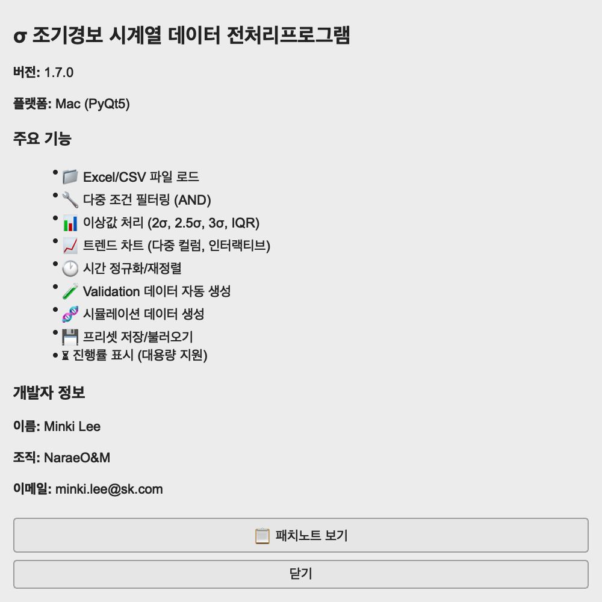
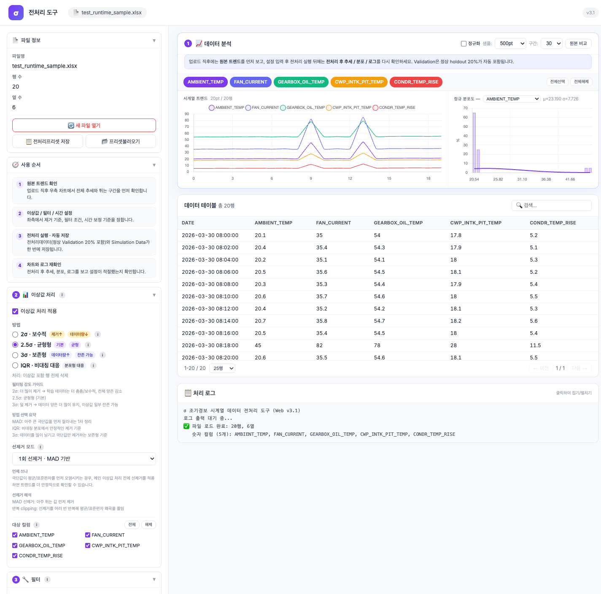
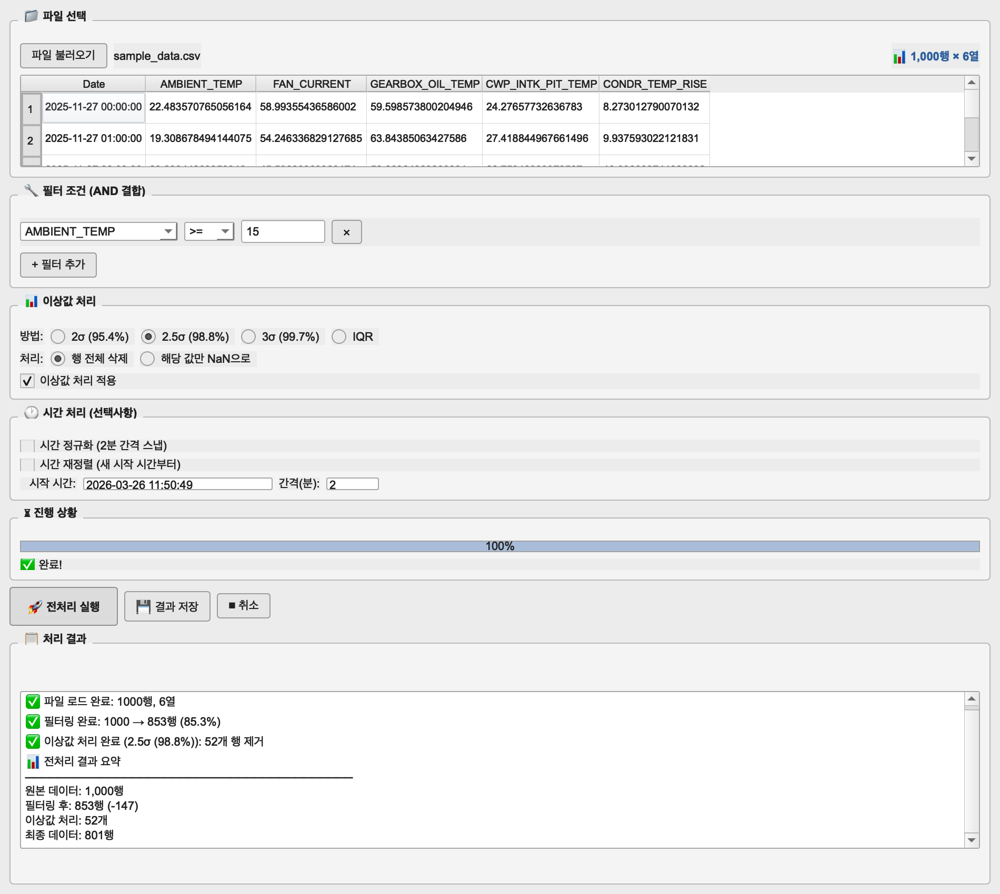
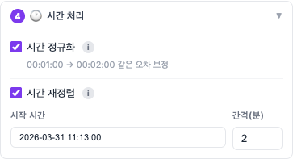
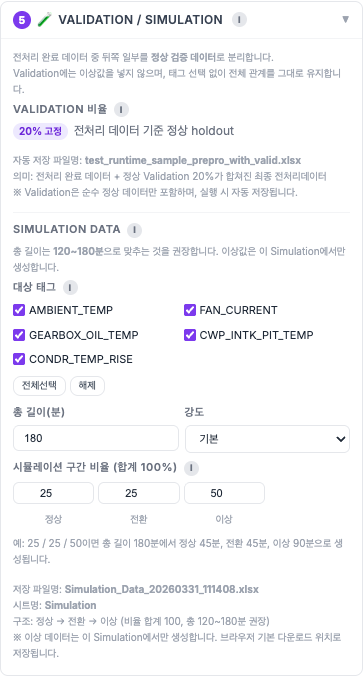
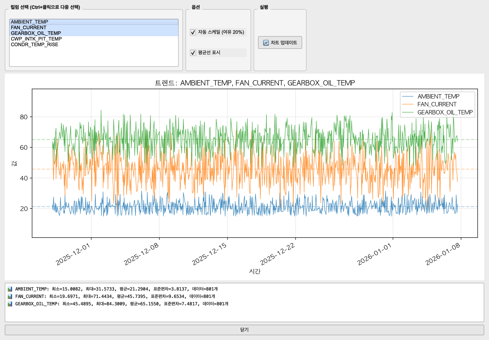

σ 조기경보 시계열 데이터 전처리프로그램 사용자 매뉴얼
이 문서는 발전소 운전원이나 처음 데이터 전처리 업무를 맡은 발전운영팀원이 파일 불러오기 → 전처리 실행 → 결과 저장까지 실수 없이 따라갈 수 있도록 순서대로 정리한 매뉴얼입니다.
파일 불러오기 → 필터/이상값/시간 옵션 설정 → 전처리 실행 → Validation 또는 시뮬레이션 생성(필요 시) → 결과 저장
Validation 데이터 생성 버튼을 바로 누르는 경우입니다. 이 기능은 전처리를 먼저 실행했고, 그 과정에서 실제로 제거된 행이 있을 때만 정상 동작합니다.
목차
1. 이 문서가 필요한 사람
이 문서를 보면 좋은 사람
- 처음 이 프로그램을 사용하는 발전소 운전원
- 데이터 전처리 업무를 처음 맡은 발전운영팀원
- 파일을 받아서 정리하고 저장까지 해야 하는 담당자
이 프로그램으로 하는 일
- Excel/CSV 파일 불러오기
- 필요한 조건만 남기도록 필터링
- 이상값 제거
- 시간 보정 및 시간 재정렬
- Validation 데이터 / 시뮬레이션 데이터 생성
- 정리된 결과 파일 저장
이 문서를 끝까지 보면 최소한 전처리 1회 실행과 결과 저장은 혼자 수행할 수 있습니다.

2. 5분 따라하기
처음에는 모든 기능을 한 번에 배우지 말고, 아래 순서대로 한 번 성공해보는 것이 가장 빠릅니다.
- 프로그램을 실행합니다.
Windows는 실행 파일 또는python gui_app.py, macOS는python gui_app_mac.py를 사용합니다. 파일 불러오기를 누릅니다.
파일명, 행/열 수, 미리보기 표가 보이는지 먼저 확인합니다.- 필터가 필요하면 1개만 먼저 넣습니다.
예:AMBIENT_TEMP >= 15 - 이상값 처리 방식은 기본값
2.5σ로 둡니다.
처음에는 기본값으로 시작해도 됩니다. 🚀 전처리 실행을 누릅니다.
하단 로그에 완료 메시지가 보일 때까지 기다립니다.💾 결과 저장으로 파일을 저장합니다.
이 단계까지 끝나면 기본 사용은 성공입니다.
Validation, 시뮬레이션, 프리셋은 첫 저장까지 해본 뒤에 사용하는 것이 좋습니다.

파일 불러오기 → 전처리 실행 → 결과 저장 흐름만 먼저 익히면 됩니다.3. 화면 읽는 법
메인 화면 영역
- 파일 선택: 파일 열기, 파일명 확인, 행/열 수 확인
- 미리보기 표: 실제 데이터가 어떻게 들어왔는지 확인
- 필터 조건: 남길 구간을 정하는 곳
- 이상값 처리: 튀는 값을 제거하는 기준 선택
- 시간 처리: 시간 보정 또는 새 시간축 부여
자주 쓰는 버튼
파일 불러오기: 작업 시작🚀 전처리 실행: 현재 설정으로 처리 시작🧪 Validation 데이터 생성: 전처리 후 검증용 파일 생성💾 결과 저장: 전처리 결과 저장⏹ 취소: 처리 중 작업 중단
✅는 정상 완료, ⚠️는 경고, ❌는 실패입니다. 실제 작업 결과는 아래 로그를 먼저 보면 됩니다.
4. 기본 전처리 작업
4-1. 파일 불러오기 후 가장 먼저 확인할 것
- 파일명이 맞는지
- 행 수와 열 수가 예상과 맞는지
- 날짜 컬럼이 제대로 들어왔는지
- 숫자 컬럼이 정상적으로 보이는지
CSV는 UTF-8 → CP949 → EUC-KR 순서로 자동 읽기를 시도합니다. Unnamed로 시작하는 빈 컬럼은 자동 제거됩니다.
4-2. 필터는 언제 쓰는가
필터는 남길 데이터만 고르는 단계입니다. 여러 조건을 넣으면 모두 AND로 묶입니다.
| 예시 | AMBIENT_TEMP >= 15FAN_CURRENT range 30 ~ 50 |
|---|---|
| 의미 | 운전 조건이 맞는 구간만 남기고 나머지를 제외합니다. |
| 주의 | 숫자형 컬럼만 필터에 사용할 수 있습니다. |
4-3. 이상값 처리는 어떻게 고르는가
| 기본 추천 | 2.5σ |
|---|---|
| 더 엄격하게 | 2σ |
| 더 느슨하게 | 3σ |
| 분포가 고르지 않을 때 | IQR |
| 실제 동작 | 이상값이 포함된 행은 행 전체 삭제입니다. |
여기서 제거된 행이 있어야 나중에 Validation이나 시뮬레이션 생성에 활용할 수 있습니다.
4-4. 전처리 실행 후 확인할 것
- 필터링 전/후 행 수가 어떻게 바뀌었는지
- 이상값이 몇 행 제거됐는지
- 시간 처리가 정상 완료됐는지
- 맨 마지막에
✅ 전처리 완료가 나왔는지
진행률 바는 현재 처리 단계가 어디까지 왔는지 보여주고, 상태 문구는 지금 무엇을 하고 있는지 알려줍니다. 처리 시간이 길어질 때는 먼저 상태 문구와 로그를 보고, 잘못된 파일이나 설정으로 실행한 것이 확실할 때만 ⏹ 취소를 누르는 것이 좋습니다.

5. 시간 처리 이해
초보 사용자가 가장 헷갈리는 부분이라 따로 설명합니다.
시간 정규화
원래 시간을 최대한 유지하면서 가까운 간격으로 보정합니다.
- 예:
00:02:01 → 00:02:00 - 엑셀 자동채우기로 시간이 조금씩 밀린 경우에 사용
- 체크박스에는 2분이라고 써 있어도 실제 기준은 아래
간격(분)입력값입니다
시간 재정렬
기존 시간을 새로 바꿔서 시작 시간부터 다시 배열합니다.
- 예: 시작 시간을
2025-01-01 00:00:00로 주면 첫 행부터 다시 배치 - 필터 후 남은 데이터에 새 시간축을 붙이고 싶을 때 사용
- 기존 시간이 중요한 원본이면 신중하게 사용
시간 정규화는 “조금 틀어진 시간을 바로잡는 것”, 시간 재정렬은 “시간표 자체를 새로 만드는 것”입니다.

시간 정규화와 아래의 시간 재정렬은 목적이 다르며, 두 기능 모두 아래 간격(분) 입력값을 함께 사용합니다.6. 저장 파일 이해
6-1. 일반 결과 저장
💾 결과 저장버튼을 누르면 전처리 결과를 1개 파일로 저장합니다.- 기본 파일명은
원본이름_processed_YYYYMMDD_HHMMSS입니다. - CSV는
utf-8-sig로 저장되고, 날짜는YYYY-MM-DD HH:MM:SS형식입니다.
6-2. Validation 생성 시 나오는 3개 파일
원본이름_prepro.xlsx | 전처리 결과만 들어있는 파일 |
|---|---|
원본이름_prepro_with_valid.xlsx | 전처리 결과 뒤에 Validation 구간을 붙인 파일 |
원본이름_valid.xlsx | Validation 구간만 따로 저장한 파일 |
_prepro.xlsx는 정리된 기준 데이터, _prepro_with_valid.xlsx는 검증 포함본, _valid.xlsx는 Validation만 따로 볼 때 사용합니다.
6-3. 시뮬레이션 파일
시뮬레이션 생성 시 기본 파일명은 Simulation_Data_YYYYMMDD_HHMMSS.xlsx 입니다.

7. 고급 기능
7-1. Validation 데이터 생성
- 먼저 전처리를 실행합니다.
- 전처리 과정에서 실제로 제거된 행이 있어야 합니다.
🧪 Validation 데이터 생성버튼을 누릅니다.- 대상 컬럼, Validation 비율, 내부 비율 4개, Sigma 범위를 입력합니다.
- 자동 생성되는 3개 파일을 확인합니다.
- 전처리를 먼저 하지 않은 경우
- 제거된 행이 없는 경우
- 대상 컬럼을 선택하지 않은 경우
- 내부 비율 4개 합계가 100이 아닌 경우
7-2. 시뮬레이션 데이터 생성
시뮬레이션 데이터 생성 로직은 프로젝트에 포함되어 있으며, 제거된 이상값을 재료로 사용해 정상 → 전환 → 비정상 흐름의 테스트용 데이터를 만들 수 있습니다.
- 전처리를 먼저 실행해야 합니다.
- 제거된 이상값 행이 있어야 합니다.
- 출력 파일명은
Simulation_Data_YYYYMMDD_HHMMSS.xlsx형식입니다.
현재 데스크톱 메인 화면에서는 시뮬레이션 전용 버튼이나 별도 실행 화면이 명확하게 분리되어 있지 않습니다. 따라서 이 매뉴얼은 현재 직접 보이는 GUI 흐름을 기준으로 설명하고, 시뮬레이션은 내부 기능이 존재한다는 수준으로만 안내합니다.
7-3. 프리셋
프리셋 저장: 현재 설정을 저장프리셋 불러오기: 저장한 설정을 다시 적용프리셋 관리: 저장 목록 확인/삭제프리셋 내보내기/가져오기: JSON 파일로 공유파일+프리셋 한번에 열기: 반복 작업 자동화
불러온 후 자동으로 전처리 실행, 전처리 후 자동 저장 옵션은 편리하지만 처음에는 수동으로 한 번 익힌 뒤 사용하는 것이 안전합니다.
7-4. 트렌드 차트
- 메뉴:
분석 → 📊 트렌드 차트... - 전처리를 먼저 실행해야 합니다.
- 최대 5개 컬럼까지 동시에 비교할 수 있습니다.
- 평균선과 통계 정보를 같이 볼 수 있습니다.
| 컬럼 선택 | Ctrl+클릭으로 여러 컬럼을 동시에 선택할 수 있습니다. 처음에는 2~3개만 비교하는 것이 읽기 쉽습니다. |
|---|---|
| 자동 스케일 | 그래프 위아래에 여유 20%를 두고 축을 잡아 줍니다. 값 차이가 큰 컬럼을 볼 때 유용합니다. |
| 평균선 표시 | 각 컬럼의 평균 위치를 점선으로 보여 줍니다. 평균 대비 상승/하강을 보기 좋습니다. |
| 통계 정보 | 최소, 최대, 평균, 표준편차, 데이터 개수가 아래에 같이 표시됩니다. |
전처리 후 결과가 정상적으로 정리됐는지 눈으로 확인하고 싶을 때, 어떤 태그가 같이 움직였는지 비교하고 싶을 때, 특정 태그가 평균에서 크게 벗어나는 구간을 찾고 싶을 때 사용합니다.
여러 컬럼을 동시에 띄우고 자동 스케일, 평균선, 통계 정보를 같이 보면서 흐름을 읽는 방식이 가장 이해하기 쉽습니다. 옵션을 바꾼 뒤 🔄 업데이트 버튼으로 다시 보면 됩니다.

🔄 차트 업데이트로 다시 확인합니다. 아래 통계 영역에는 각 컬럼의 최소, 최대, 평균, 표준편차가 함께 표시됩니다.7-5. 도움말 메뉴
| 사용자 매뉴얼 | 지금 보고 있는 HTML 문서를 엽니다. 단축키는 F1 |
|---|---|
| 용어 설명 | 2σ, 2.5σ, 3σ, IQR 같은 이상값 처리 용어를 간단히 확인합니다. |
| 프로그램 정보 | 버전, 주요 기능, 개발자 정보를 확인합니다. |
| 패치노트 보기 | 변경 이력을 확인합니다. |
7-6. 자주 쓰는 단축키
Ctrl+O | 파일 열기 |
|---|---|
Ctrl+S | 결과 저장 |
Ctrl+P | 프리셋 저장 |
Ctrl+T | 트렌드 차트 열기 |
F1 | 사용자 매뉴얼 열기 |
처음에는 버튼으로 익히고, 반복 작업이 익숙해지면 단축키를 사용하는 것이 편합니다.
8. 자주 막히는 상황
파일이 안 열릴 때
- 확장자가
.xlsx,.xls,.csv인지 확인 - CSV 인코딩이 깨진 경우 UTF-8/CP949/EUC-KR 여부 확인
- 문서보안(AIP/DRM) 파일이면 해제 후 사용
필터 컬럼이 안 보일 때
- 숫자형 컬럼인지 확인
- 문자 컬럼과 날짜 컬럼은 직접 필터 대상으로 잘 보이지 않을 수 있음
Validation이 안 될 때
- 전처리를 먼저 했는지 확인
- 실제로 제거된 행이 있는지 확인
- 컬럼을 하나 이상 선택했는지 확인
- 내부 비율 4개 합이 100인지 확인
시간 처리 결과가 예상과 다를 때
- 시간 정규화인지, 시간 재정렬인지 다시 확인
간격(분)값을 확인- 재정렬은 기존 시간을 새로 바꾸는 기능이라는 점을 다시 확인
행 수가 많으면 시간이 오래 걸릴 수 있습니다. 이때는 아래 로그와 진행률 표시를 먼저 보고, 중간에 여러 번 버튼을 누르지 않는 것이 좋습니다.
9. 최종 점검표
- 1파일을 불러오고 미리보기까지 확인했다.
- 2필터와 이상값 처리 기준을 확인했다.
- 3필요할 때만 시간 처리를 켰다.
- 4전처리 실행 후 로그에서 완료를 확인했다.
- 5Validation이나 시뮬레이션은 선행조건을 확인한 뒤 실행했다.
- 6결과 파일 이름과 용도를 확인하고 저장했다.
기본 전처리 작업은 혼자 처리할 수 있는 수준입니다. 반복 작업이 많아지면 그때 프리셋 기능을 익히면 됩니다.